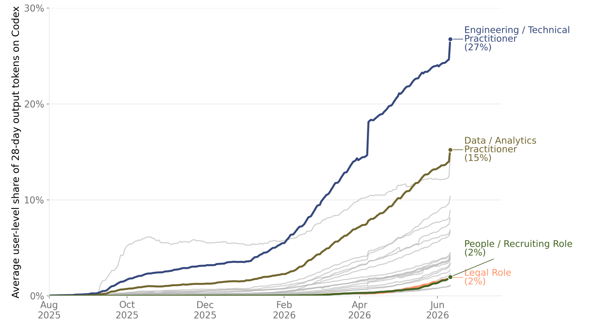
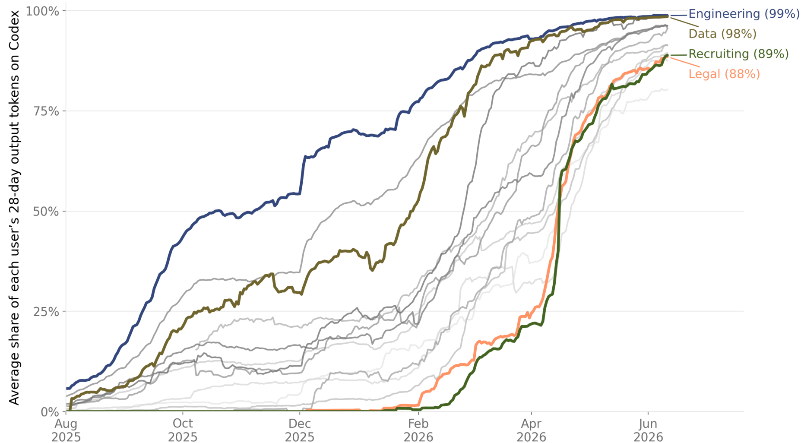
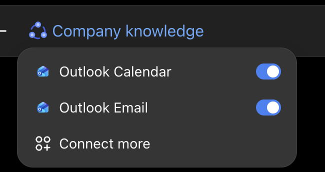
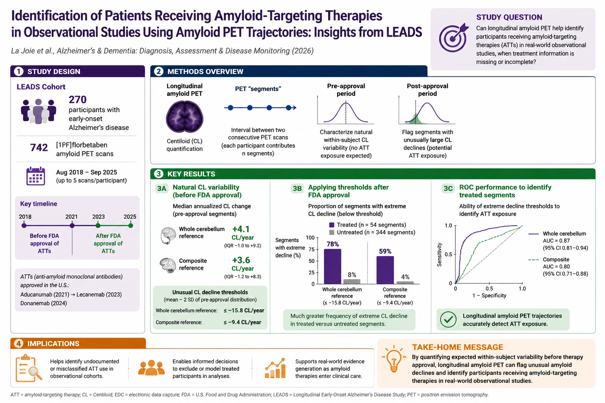
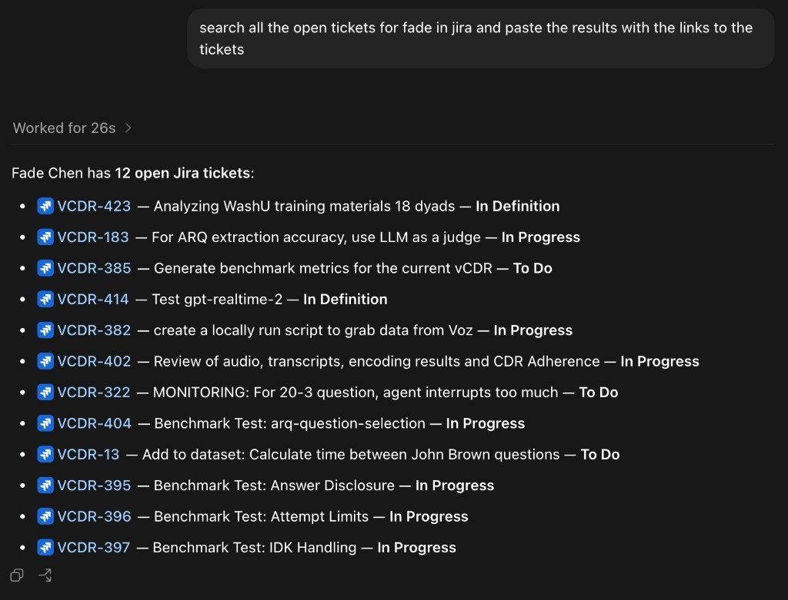

Agentic AI does not just reply with text. It breaks a goal into steps, uses real tools (your files, terminal, browser, data), acts, checks the result, and repeats until the task is done.
For real work, the shift is from AI that tells you how to AI that does it with you: fewer copy-pastes, more finished tasks.
Agentic coding is diffusing fast and broadly: Codex's share of output tokens climbs across job functions, not just engineering. “The shift to agentic AI: evidence from Codex” · Fig. 3, share of output tokens by worker type



Both ChatGPT Enterprise and the Versa API are cleared for PHI data. Inputs are not retained for model training.
LLMs excel at complex tasks: board exams, benchmarks (including diagnosis)
Huge potential to revolutionize clinical care, programmed for specific use cases
Massive jagged intelligence: gap between model strengths and weaknesses
Harness closes the gap (planning, context, verification)
Hallucinations are declining, but persist
Scientific and empirical grounding
No continual learning: model's knowledge lags current medical information
Access to updated information (e.g. FDA, clinical trials, Dx criteria, treatment)
Limited context window and sample inefficiency
Effectively compress information (vector databases, knowledge graphs)
LLMs lack stats metrics for predictions or classifications, limiting implementation and trust
Combine with traditional ML models (quantitative, interpretable features)
Most studies on genAI for diagnostics use simulated or journal-curated data
Need for real data and real-world use cases: clinical validation
An AI tool generated this graphical abstract of a new paper. It looked authoritative, but the numbers were wrong.

Hallucinations look real. The summary assigned values to the wrong groups and invented key results, yet looked polished enough to accept and share. As models improve, these errors get harder to spot.
Wrong model for the task. Image generators optimize for visual appeal, not quantitative fidelity. Use a language model to build code-based visuals (e.g. HTML) from the real numbers, trading polish for accuracy.
AI literacy in research. One interface hides many different models. Know which fits which task, where it fails, and treat every output as a draft to verify against the source.
Same model, same tools. What changes is the surface you work in: a terminal or a desktop app. Pick the one that fits how you work.
For big or ambiguous tasks, ask the agent to plan before it acts. It explores read-only, proposes a step-by-step plan, and only changes files once you approve.
Help me organize this messy dataset. Dozens of spreadsheets are scattered across different folders, file names are not standardized, some sheets duplicate columns, and a few use different units. I want one clean, documented table.
A skill is a small markdown file that tells the agent how to do a specific task, with reusable instructions and helper scripts. You can even ask the agent to write the skill itself.
--- name: frontend_prototype description: Polished single-file HTML in a clinical-blue editorial design system. --- ## Design tokens --slate: #052049; /* navy text */ --clay: #1C75BC; /* clinical blue */ ## Slides / Decks Full-screen scroll-snap, one idea per slide, arrow-key navigation, fixed counter.
The agent can write the very skill that powers it. frontend_prototype was generated this way, and now it builds every slide you're seeing.
Prompt engineering is about the words you send. Harness engineering is about the system around the model: the tools it can call, the loop it runs, and the services it can reach.
Three parts: the function, the schema the model sees, and a prompt telling it when to call.
# 1. the function (your code) def search_patients(query): return db.search(query) # 2. declared to the model {"name": "search_patients", "description": "find patients", "parameters": {"query": "str"}} # 3. tell the model to use it system: "Call search_patients to look up patient records."
The model plans, calls a tool, reads the result, and repeats until the goal is met.
A standard way to plug in outside tools and data, so the agent reaches beyond the chat.
MCP (Model Context Protocol) is an open standard for connecting an agent to outside tools and data. Each server is really a connector, or plugin: add one, and the agent gains a new capability, like apps for a phone or extensions for a browser.
Add a server, gain a capability. You have already used one: the Outlook connector in ChatGPT Enterprise.
A real NeuroAI Lab tool: read every applicant CV, score it against our hiring criteria, and justify each decision, then post the ranked results back to our UCSF GitHub.
| Candidate | Academic | Clinical | Modality | Technical | Score |
|---|---|---|---|---|---|
| Candidate A | ✓ high | ✓ med | ✓ high | ✓ high | 4/4 |
| Candidate B | ✓ high | ✗ low | ✓ med | ✓ high | 3/4 |
| Candidate C | ✓ med | ✗ low | ✓ med | ✗ low | 2/4 |
A skill for the work researchers dread: point-by-point reviewer and grant responses. It drafts one comment at a time, grounds every reply in the manuscript's tracked changes, and verifies each citation before using it.
“The subgroup analyses seem underpowered. Please justify the sample sizes.”
We thank the reviewer for this helpful point. We agree these analyses are exploratory, now say so explicitly, and report 95% confidence intervals throughout. We added the following to the Methods:
Paperclip is a biomedical literature connector and CLI. Once installed, Codex can search papers, regulatory documents, and clinical trials, read the source text, and bring back citations instead of relying on memory.
Run the Paperclip installer, sign in, then install the project skill and select Codex.
curl -fsSL https://paperclip.gxl.ai/install.sh | bash paperclip install # select Codex
Start a fresh Codex session in the project, then mention the skill in the prompt. The agent loads the Paperclip docs and chooses the right commands.
using /paperclip, find papers about Alzheimer's and pTau217 in Black populations
Codex can iterate over the corpus, inspect the papers it finds, and summarize only what is supported by sources.
Remember MCP servers, the connectors from earlier? Here is one, live. Point Codex at Atlassian Jira and it can read your board: ask for your open tickets in plain English and get them back with working links.
# ~/.codex/config.toml [mcp_servers.atlassian] command = "npx" args = ["-y", "@aashari/mcp-server-atlassian-jira"] [mcp_servers.atlassian.env] ATLASSIAN_SITE_NAME = "your-site" ATLASSIAN_USER_EMAIL = "you@ucsf.edu" ATLASSIAN_API_TOKEN = "ATATT3x••••••••" # from id.atlassian.com
--- name: jira description: Always link every ticket, show its status, confirm before writes. --- One format, every time: [KEY](…/browse/KEY) · summary · status

The tools are already here and they are PHI-safe. The fastest way to learn is to point one at a piece of real work and watch what it does.